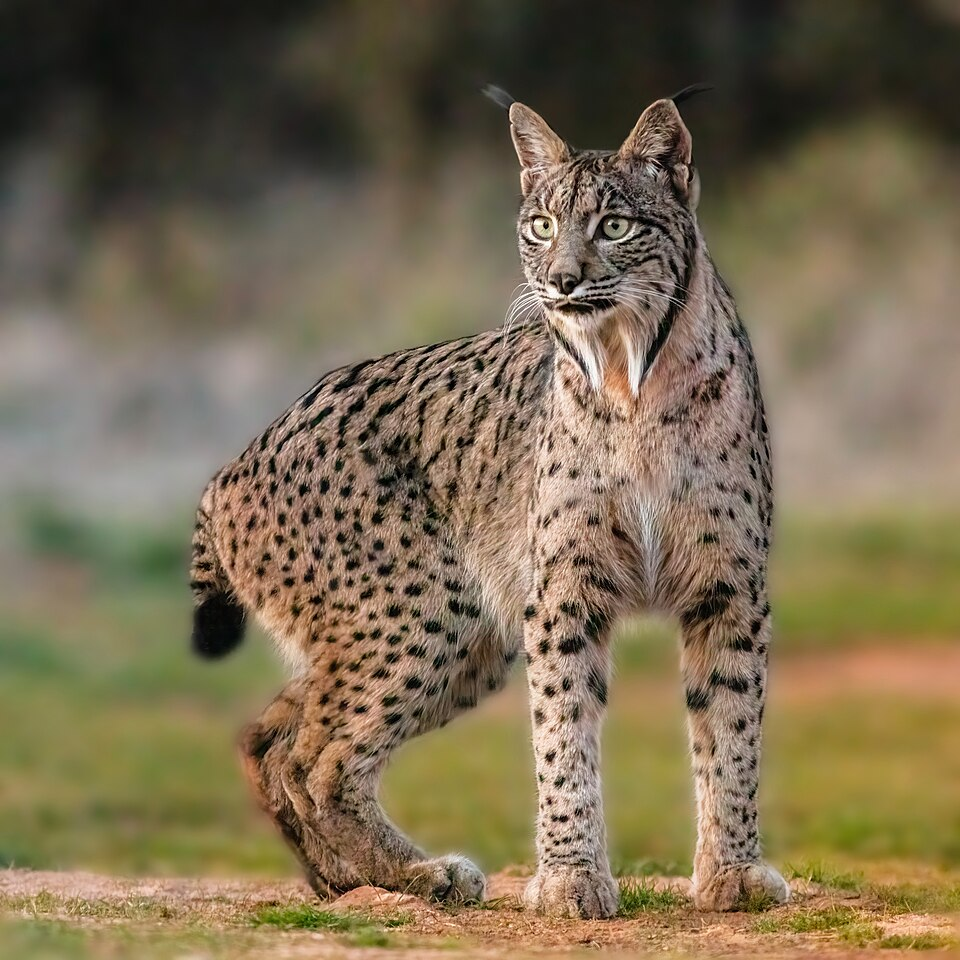

O lince-ibérico (nome científico: Lynx pardinus), também conhecido como liberne, lobo-cerval, gato-fantasma, gato-cerval e gato-lince, é uma espécie de mamífero da família Felidae e género Lynx. Anteriormente considerado uma subespécie do lince-euroasiático (Lynx lynx), o lince-ibérico está agora classificado como espécie separada. Ambas as espécies percorriam juntas a Europa central durante o período Pleistoceno, separadas apenas por escolhas de habitat. Acredita-se que o lince-ibérico, assim como os outros linces, evoluiu a partir do Lynx issiodorensis.
Link da wikipedia